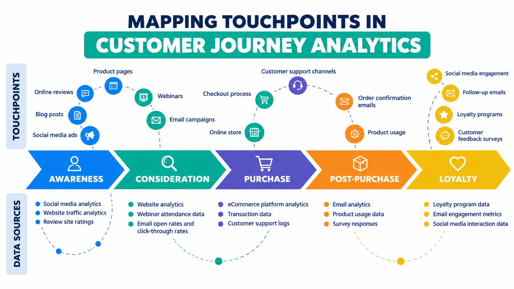

A few of the problems I've led teams through at Spectrum and Charles Schwab. Each one starts with a business question and ends with something people use.
A thread through my career
Connecting what customers do to why they do it
The same question has come up in every operations role I've held: which calls, chats and clicks lead to which outcomes? I've built a version of this mapping at three companies, each one larger and more automated than the last.
2014–16Calls to clientsA multi-stage process matching calls to specific Discover Bank customers
2018–20Web URLs to transactionsAn algorithm mapping Schwab web activity to financial transactions
2020–24Every channel to every transactionJourney Analytics: call, chat and web mapped to trades, money movement and more
2024–Network signals to experienceSpectrum usage profiles and anomaly detection on very large network datasets
Spectrum · 2024–present · Generative and agentic AI
Bringing agentic AI into a product organization
As an AI ambassador within Spectrum's product organization, I help integrate generative and agentic AI, with a focus on data, analytics and data science work.
Problem
About 70 product managers across Internet, WiFi and Voice rely on my team for monthly and ad hoc reporting, some of which reaches the CEO. Much of that cycle was repetitive work that kept analysts away from deeper questions.
Approach
Use AI agents to take on routine reporting and analysis steps and help teams across the product organization adopt generative and agentic AI responsibly.
Outcome
Shorter reporting cycles and more analyst time for the work that needs judgment, with AI practices spreading beyond my own team.
Agentic AI
Claude
Gemini
Prompt engineering
Change leadership
Spectrum · 2024–present · Machine learning on network data
Usage profiles and competitor outage detection
Two machine learning products built from very large network and speed-test datasets, one for product segmentation and one for marketing.
Problem
Product teams needed to know how households actually use their internet. Marketing needed to know when competitors' networks were down.
Approach
Customer usage profiles from Deepfield data: Work from Home, Night Owls, 24x7 IP Camera, Live TV and several gaming profiles.
Competitor outage detection from Ookla speed-test data.
Outcome
Usage profiles feed product segmentation. Outage signals help marketing target advertising spend where competitors are struggling.
Segmentation
Anomaly detection
Big data
Telecom
Charles Schwab · 2020–2024 · ML, NLP, speech analytics
Journey Analytics: mapping client interactions to client transactions
I led an enterprise effort to connect every client interaction to the transaction behind it, funded as part of a multi-million dollar program to improve servicing efficiency.

The journey stages, touchpoints and data sources that journey analytics connects.
Problem
Terabytes of call, chat and web data, with no reliable way to tie a contact to the trade, money movement or password change that caused it.
Approach
Agile sprints building a framework of matching algorithms, machine learning and speech analytics that sharply reduced the data while keeping the signal.
Outcome
Used across the firm by product owners, the call center and business leaders to find areas for improvement and as KPIs for product enhancements.
NLP
Speech analytics
Machine learning
Agile
Charles Schwab · 2020–2024 · ML and generative AI portfolio
A data science portfolio worth more than $10M a year
I led a team building machine learning, NLP and generative AI models across the client lifecycle, and partnered with executives to decide which ones to fund.
Problem
Many possible AI use cases and limited people to build them. Leaders needed a clear view of value, cost and staffing before committing.
Approach
Defined use cases, ROI and resourcing with executives for committee approval, then built attrition, lifetime value, fraud, call propensity and chatbot models.
Outcome
Annual ROI above $10M. I also led the evaluation of Client Data Platform vendors, including Salesforce, for the next-generation Customer 360.
Attrition
Lifetime value
Fraud
Chatbots
Executive partnership
Charles Schwab · 2020–2024 · Merger integration
Integrating data science through the TD Ameritrade merger
I led merger integration for the data science organization and a cross-functional project to identify clients shared by both firms.
Problem
Two firms, two data science groups, and regulatory requirements that depended on knowing which clients belonged to both.
Approach
Gathered requirements for about 40 data scientists and tracked progress before and after the merger. Built the shared-client identification used for internal use cases and regulatory reporting.
Outcome
A single view of shared clients that served both internal teams and regulatory needs through the integration.
Entity resolution
Program leadership
Regulatory
Looking for someone to lead analytics, data science or AI?
I'm glad to talk about leadership roles, AI adoption in analytics teams, or anything on this site.